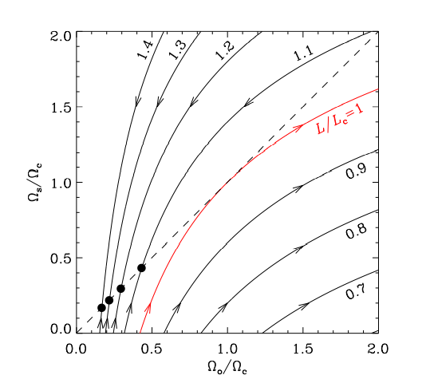

Here we are to focus on three main processes which contribute to
evolution of planetary orbits
- Tidal Effects
- The action of a resisting medium
- Colisions and scattering of planets
Tidal effects
Tidal effects on orbital evolution comes into significance only when (R/r) is relatively large. That is when large planets orbit very close to host stars. The equations governing the change of orbital semi-major axis a, the spin angular momentum Ωs, the orbital eccentricity e and obliquity i which is the spin-orbit misalignment for body 1 due to body 2 is given by $$$$ \begin{aligned} &\frac{1}{a}\frac{da}{dt}=-3\kappa_{2,2,2}\frac{M_2}{M_1}\left(\frac{R_1}{a}\right)^5\Omega_o\\ &\frac{1}{\Omega_{\mathrm{s}}} \frac{\mathrm{d} \Omega_{\mathrm{s}}}{\mathrm{d} t}=\frac{3}{2} \kappa_{2,2,2} \frac{L_{\mathrm{o}}}{L_{\mathrm{s}}} \frac{M_2}{M_1}\left(\frac{R_1}{a}\right)^5 \Omega_{\mathrm{o}}, \\ &\frac{1}{e} \frac{\mathrm{d} e}{\mathrm{~d} t}=\frac{3}{16}\left(4 \kappa_{2,2,2}-6 \kappa_{2,0,1}+\kappa_{2,2,1}-49 \kappa_{2,2,3}\right) \frac{M_2}{M_1}\left(\frac{R_1}{a}\right)^5 \Omega_{\mathrm{o}}, \\ &\frac{1}{i} \frac{\mathrm{d} i}{\mathrm{~d} t}=\frac{3}{4}\left[\kappa_{2,2,2}\left(1-\frac{L_{\mathrm{o}}}{L_{\mathrm{s}}}\right)+\left(\kappa_{2,1,0}-\kappa_{2,1,2}\right)\left(1+\frac{L_{\mathrm{o}}}{L_{\mathrm{s}}}\right)\right] \frac{M_2}{M_1}\left(\frac{R_1}{a}\right)^5 \Omega_{\mathrm{o}}, \end{aligned} where $$ \kappa_{l, m, n}=\operatorname{Im}\left[k_l^m\left(n \Omega_{\mathrm{o}}\right)\right] $$ which is the imaginary part of the love number corresponding to the tidal component, and $$ \frac{L_{\mathrm{o}}}{L_{\mathrm{s}}}=\frac{\mu\left[G M a\left(1-e^2\right)\right]^{1 / 2}}{I_1 \Omega_{\mathrm{s}}}=\frac{G M_1 M_2\left(1-e^2\right)^{1 / 2}}{I_1 \Omega_{\mathrm{s}} \Omega_{\mathrm{o}} a} $$ is the ratio of orbital angular momentum to spin angular momentum of body 1. Here M is the total mass of and µ is the reduced mass of two bodies. These equations are valid only for sufficiently small values of i and e.
The tidal equilibrium point can be characterized by total angular momentum L(Ω) which is the sum of spin and orbital angular momentum which are increasing and decreasing functions respectively. This implies that L(Ω) has a critical value Lc at Ω=Ωc. The equations for Lc and Ωcare given below. $$ L_{\mathrm{c}}=4 I \Omega_{\mathrm{c}}, \quad \Omega_{\mathrm{c}}=(G M)^{1 / 2}\left(\frac{\mu}{3 I}\right)^{3 / 4} $$ Fig 1 shows the evolution path stellar spin(planetary spin is assumed to be unimportant) and orbital angular velocity.